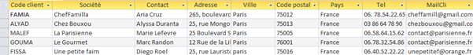
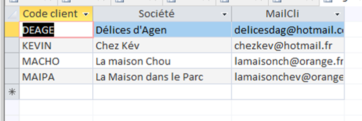
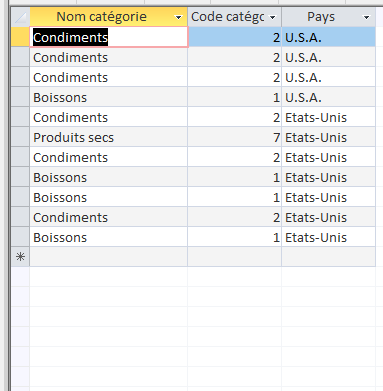
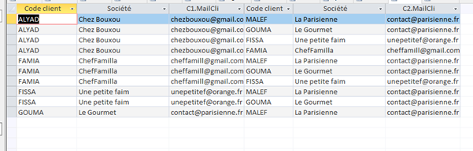

Mission 2 : Exploitation de la base KDou
1. Contexte de la mission 2
Dans cette mission, nous avons exploité la base de données KDou à l’aide d’un outil « low-code » (interface graphique et générateur de requêtes) afin de répondre à des questions précises sur les clients, les fournisseurs et les produits.
L’objectif était de formuler des besoins métiers en langage naturel, puis de les traduire en requêtes SQL et d’interpréter les résultats pour aider KDou à mieux piloter son activité.
2. Indicateurs retenus
Indicateur 1 – Coordonnées des clients parisiens
Énoncé : On veut vérifier les coordonnées des clients parisiens, en donner une liste triée par société.
Intérêt pour KDou : Cet indicateur permet à KDou de cibler plus facilement ses clients situés à Paris, ce qui est utile pour organiser les tournées de livraison, planifier des actions commerciales locales ou encore analyser la concentration de la clientèle dans la capitale.
Requête SQL :
SELECT *
FROM Clientele
WHERE Ville = "Paris"
ORDER BY Societe;
Résultat (extrait) :
Indicateur 2 – Clients sans commande
Énoncé : Quels sont les clients qui n'ont pas encore passé de commandes (code, société et mail) ?
Intérêt pour KDou : Cet indicateur met en évidence les clients inactifs. KDou peut ainsi décider de lancer des campagnes de relance (promotions, mails personnalisés) ou de mettre à jour sa base comme la suppression d’anciens comptes pour garder des données à jour.
Requête SQL :
SELECT Clientele.CodeCli, Clientele.Societe, Clientele.MailCli
FROM Clientele LEFT JOIN Commande
ON Clientele.CodeCli = Commande.CodeCli
WHERE Commande.CodeCli IS NULL;
Résultat (extrait) :
Indicateur 3 – Catégories de produits vendues par les fournisseurs américains
Énoncé : Quelles sont les catégories de produit vendues par les fournisseurs américains ?
Intérêt pour KDou : Cet indicateur aide KDou à analyser la part de son offre qui dépend de fournisseurs basés aux États-Unis. Cela permet de mieux évaluer les risques liés aux importations (taux de change, délais, coûts de transport) et d’orienter la stratégie d’achats ou de diversification des fournisseurs.
Requête SQL :
SELECT DISTINCT Categorie.NomCateg, Produit.CodeCateg, Fournisseur.Pays
FROM Fournisseur INNER JOIN
(Categorie INNER JOIN Produit
ON Categorie.CodeCateg = Produit.CodeCateg)
ON Fournisseur.NoFour = Produit.NoFour
WHERE Fournisseur.Pays = "U.S.A." OR Fournisseur.Pays = "Etats-Unis";
Résultat (extrait) :
Indicateur 4 – Couples de clients parisiens pour optimiser les livraisons
Énoncé : Pour optimiser les livraisons, on regarde quels couples de clients sont à Paris. Lister les possibilités avec pour chacun code, société et mail.
Intérêt pour KDou : Cet indicateur permet de repérer des paires de clients proches géographiquement (même ville) et de mieux organiser les tournées de livraison. KDou peut ainsi réduire les coûts de transport et le temps de trajet en regroupant certaines livraisons.
Requête SQL :
SELECT C1.CodeCli, C1.Societe, C1.MailCli,
C2.CodeCli, C2.Societe, C2.MailCli
FROM Clientele AS C1 INNER JOIN Clientele AS C2
ON C1.CodeCli < C2.CodeCli
WHERE C1.Ville = "Paris" AND C2.Ville = "Paris"
ORDER BY C1.CodeCli;
Résultat (extrait) :
